Hexi Corridor
After I left Lanzhou, The route became very simple. As long as I get on to the National Highway No. 312,
I will pass through a series of oasis city: Weiwu, Zhangye, Jiuquan, Jiayuguan, Yumen, Dunhuang and all the way to Urumchi,
and finally entering Kazakhstan.
I rode in the Hexi Corridor at the part of this road in Gansu,.
This corridor cut through the mountain, and is part of the famous Silk Road that Zhang Qian took to the west.
I am kind of excited with the fact that I am on the same road that Mr. Zhang took.
The first thing today is to rode across Lanzhou. It is until now that I know I had only been to a small part of Lanzhou city.
It took me nearly an hour from where I stay to the city border of Lanzhou.
The road construction began right outside the city limit, and the condition of the road became so bad that it totally made me mad.
Even ordinary car was turned into bumpy car in this kind of road condition.
The road was so bad that I had to walk Dido through this lousy part of road, or Dido might be damaged by the awful road condition.
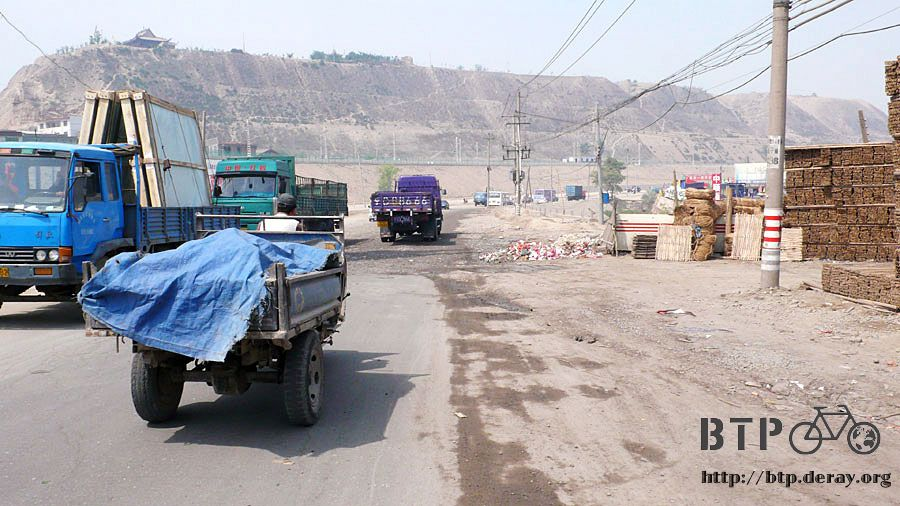
Even since I entered Gansu, I had been eating beef noodle.
From the Lanzhou beef noodle to the Qing Zhen (translator note: Qing Zhen means Islamic) beef noodle that allows extra portion of meat,
I had already lost count on how many meals of beef noodle I had.
Right before I left Lanzhou, I had another beef noodle as my lunch. With extra meat of course.
In the restaurant, I found a teapot placed on my table.
It has an engraving of two Chinese characters “Qing Zhen” on it. I think to myself “Wow, that is a beautiful teapot, even comes with engraving.”
I hailed the waiter for a glass, and told him that I want to have a sip of the tea inside this teapot.
“What? You serious? It is vinegar inside this teapot!”
Why do they want to put vinegar in beautiful teapot?
This made me want to dig a hole on the ground and hid in it, since every one in the restaurant now know that I want to drink some vinegar.
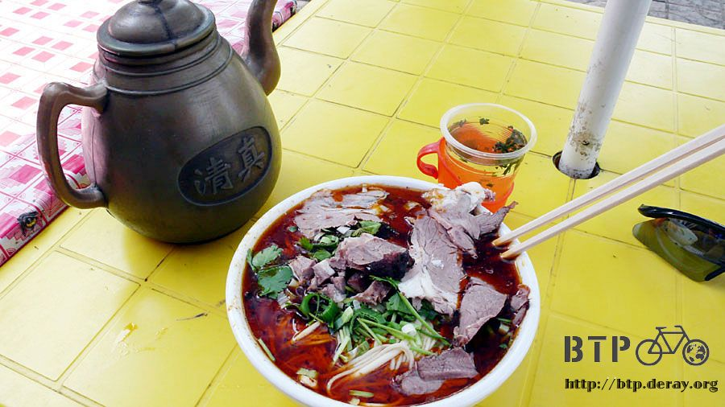
Side with the orange flavored soda which costs 30 cent each and eating the delicious beef noodle,
I say to myself “Even though this is delicious, maybe its time to find something other than beef noodle to eat.”
When I stuffed my stomach, applying the sunscreen and resting in the shade of the tree outside,
a gang of elementary school students who were one their way home surrounded me.
“How do you do, Uncle?”
Please call me “Brother” instead…
“Uncle, this bike is so cool!”
Would you please kindly address as “Brother”? Please?
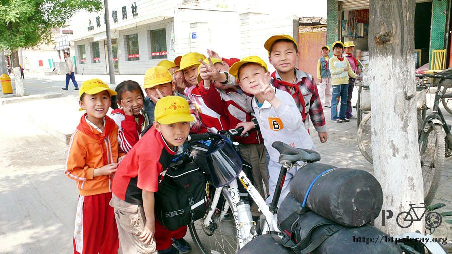
This group of kids would be totally adorable if they know how to address me correctly.
Okay, now everyone gather here and take a picture with the “Big brother’s” bike.
One major advantage of the digital camera is you get to see the picture right after you took it.
I showed the picture to the kids, and every one of them was screaming with excitement.
Then someone said that they want to take picture with Dido one by one.
Well, it is not like I have endless time to play with you kids…
But actually, I do have some time to kill. I talked with these kids and showed them my gears.
My fingerless biking glove normally shows my finger when I wore it, but when it is on the kids’ hand, their fingers are barely visible.
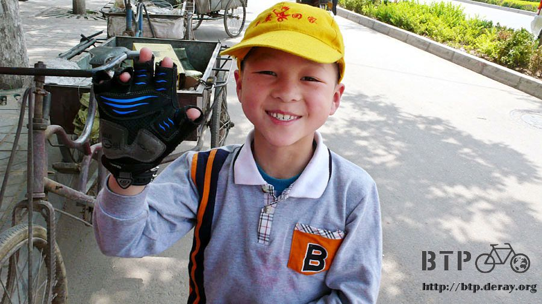
A chatty kid who said that my bike helmet looks like a turtle shell says
“the bike has a head light with it, this is really high standard gear”
Another sophisticated kid says that they are really happy to meet you, Uncle.
Hey, please call me “big brother”, or I will play with you guys no more.
After I followed the road westbound to He-kou, the road split into two.
National highway 109 leads to Qinghai and National highway 312 leads to Xinjiang.
After I went back to the correct road – I almost went on the road to Qinhai – I went on National highway 312.
I will have to stick to this road for more than 2000 kilometers, and I wished that the road is in good shape,
the view alongside it is splendid and few truck travels along it.
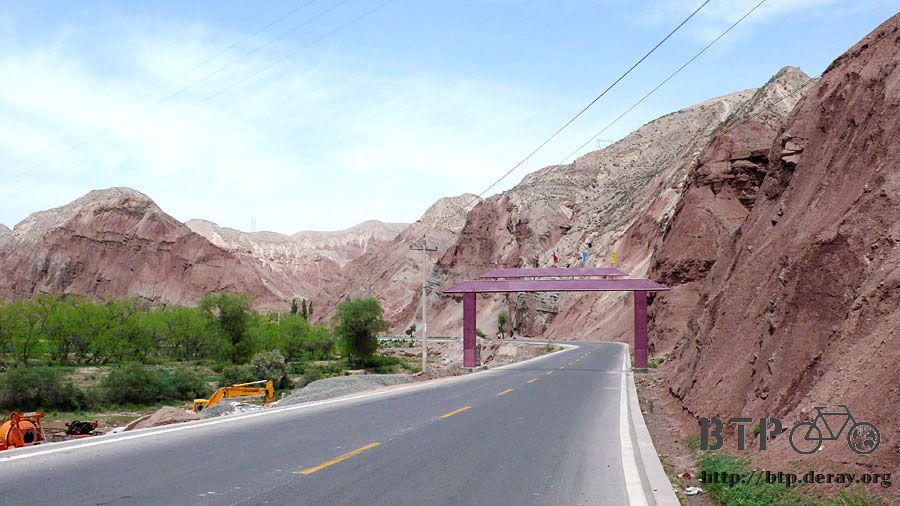
It is a boiling hot day today. The temperature is around 35 degree Celsius under the sun.
Thanks for the merchants along the road who supplied me with ice bars so that I can maintain the stamina under this extreme sunlight.
Whenever I saw someone selling ice bars, I stopped and buy two bars of it.
I consume one bar while riding and keep the other bar in my jacket pocket, as a mean to cool my body.
My original plan was to eat about 15 bars for today, but when I arrived at the destination for today I had only finished 8 bars.
If the sun keeps on grilling the ground tomorrow, I will continue my quest of ice bar eating.
After some time, when I went to the deserted ground, there will not be so many road side merchants around.
Riding in the Hexi Corridor feels like riding in the East Rift Valley when I was biking around Taiwan.
The corridor is not a narrow place, but with the mountain alongside it, this corridor is the only place you can find greenness.
I don’t know why the mountains are so bald, not even a little grass on it.
But the naked mountain creates a good contrast and makes the corridor more green and beautiful.
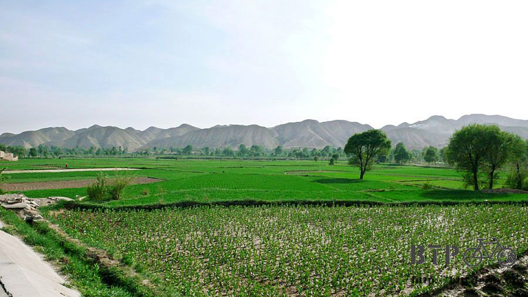
In the distance you can see some thing looks like paddy field.
(cut the crap, how do you get paddy field in such a dry place).
After I took a close look, those illusion of water in the field comes from the reflections of the plastic sheet they put on top of the field.
The farmers here had to put these plastic cover on the ground to keep the water from evaporating, or their crops will dry out and die.
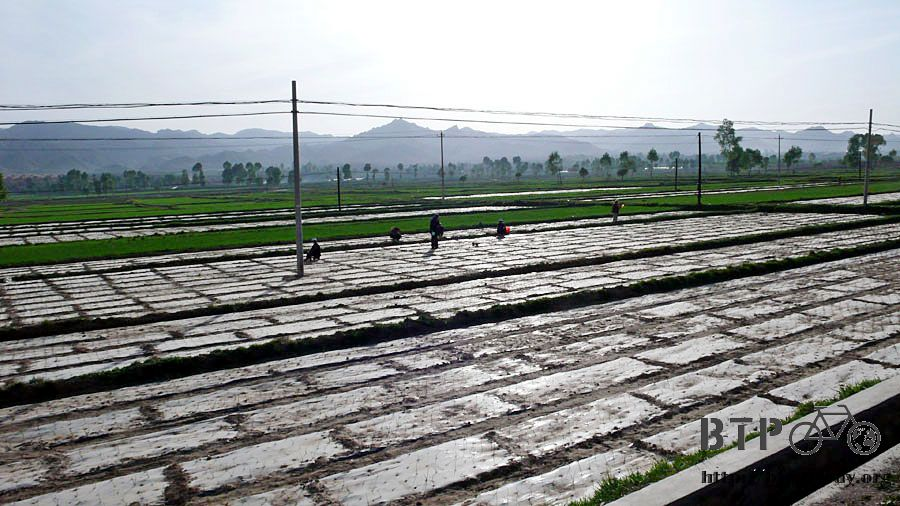
When I rode to “four of a kind” on the national highway 312, I found out that the highway has a twin brother!
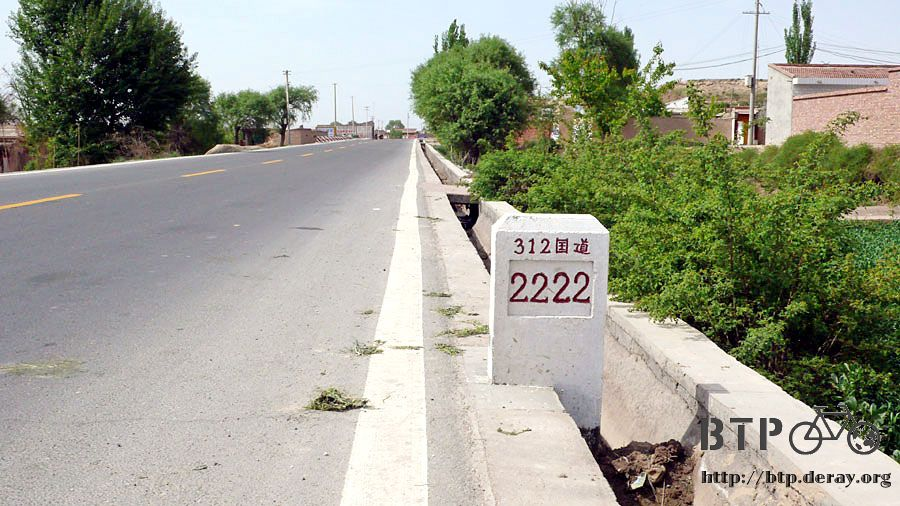
One of them is newly built, and the other one is the old highway.
The sign on the new highway listed all the cities I plan to go along the way and looks very promising.
I am a little bit hesitated in which road to take.
Later today I talked with the owner of the hotel about this problem,
and he said that the new road is like a closed highway with few exits and no access to store or villages.
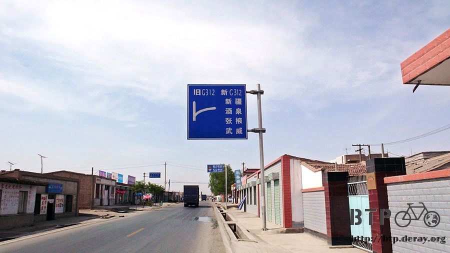
Isn’t this the replica of the other road I had been on before?
Two highway exits for the whole day, one for lunch and one for lodging?
It is totally boring to ride on this kind of road. Thanks for that information, I decided to go on the old 312 highway.
I feel a bit of hungry around 4:30 PM. Since it is hot outside, I want to have some cold noodle.
But even though the cook knows how to make it, they are out of cold noodle. I end up ordered a dry noodle with sauce.
I slowly found out that these “general terms” of the dishes are merely an abstract idea of the food.
The dish may come in the same name, but each cook makes it differently.
Not only different in the taste but also the ingredients.
Take the dry noodle with sauce as an example. This is totally a dish of vegetable noodle!
But thanks to the vegelized dry noodle with sauce, I have a lot of delicious vegetables today.
I have been eating few vegetables lately.
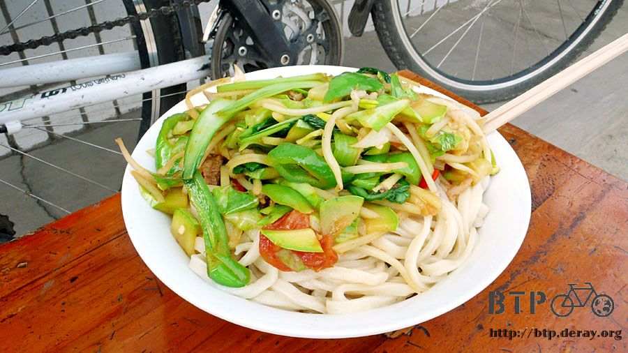
After the early dinner, it is only one hour on bike before I arrive at the stop for tonight.
I know nothing about this town Yongdeng, all I know about it is I will spend a night here.
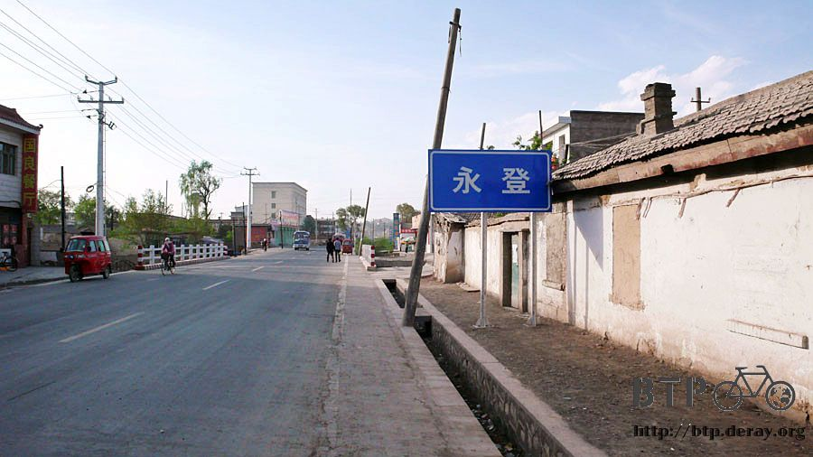
When I was trying to find the Hotel in town, I saw a hotel show their prices of the room below the sign.
That is a good gesture, since this way you will not be overcharged so easily.
I looked at the price and start to think of how much I am willing to spend on lodging now.
If I saw this price at the first day of my journey, I will be yelling “It’s so cheap! This is totally cheap! Totally affordable!”
But now I do not think so. The hotel staff opens the window and tell me to get in, and I wave goodbye to him.
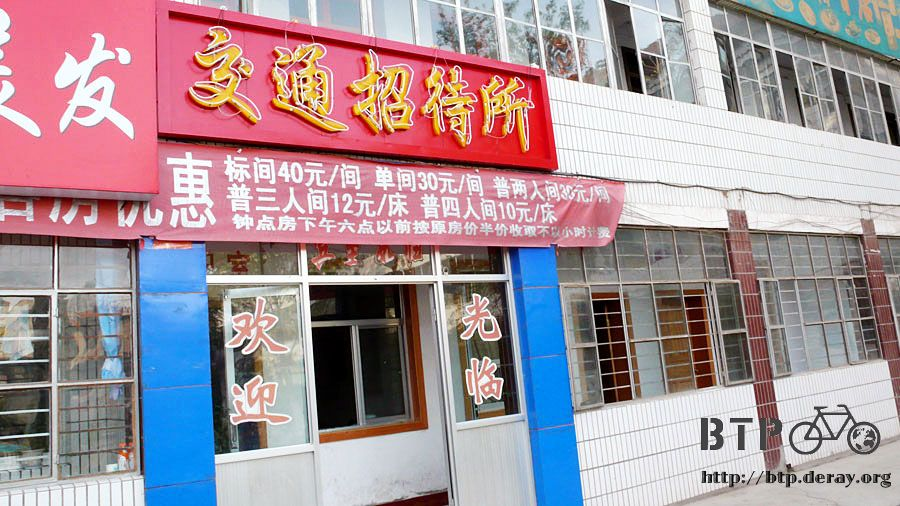
Then I found a hotel charge me for 10 bucks, since the staff is friendly and the price is good, I stayed at that hotel.
However, after I checked in I found out that it is a room for three,
and there is already a guy checked in who travels with motorcycle and work along the way. Well,
it is going to be another night of sleep with all my luggage on the bed.
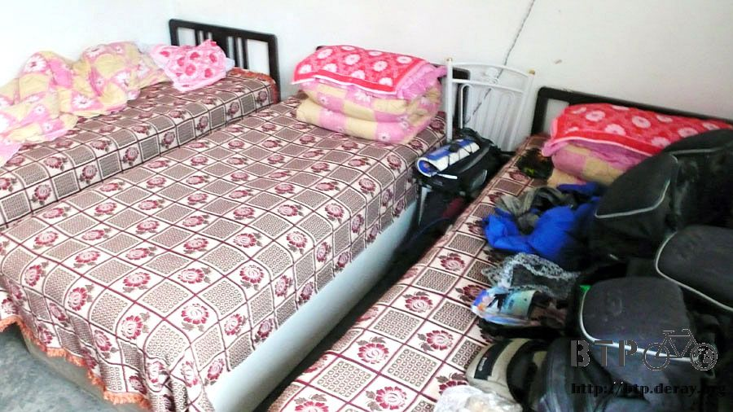
The guy who travels on motorcycle tells me how it is like on the road to Weiwu, which is my destination tomorrow.
(He rode his motorcycle from Zhangye to here today, and that is a three day ride for me on bicycle.)
Tomorrow I will have to pass through Wuqiaoling mountain, altitude around 2700 meters above sea level.
This means I will have to climb for around 1000 meter in height tomorrow.
The guy says that the slope is quite steep, and I might have to walk my bike.
The good news is that the slope is not too long at a little more than 4 kilometers..
The hotel owner also lives at this hotel. When I was washing my clothes with the icy cold water, I suddenly felt the urge to gulp the water.
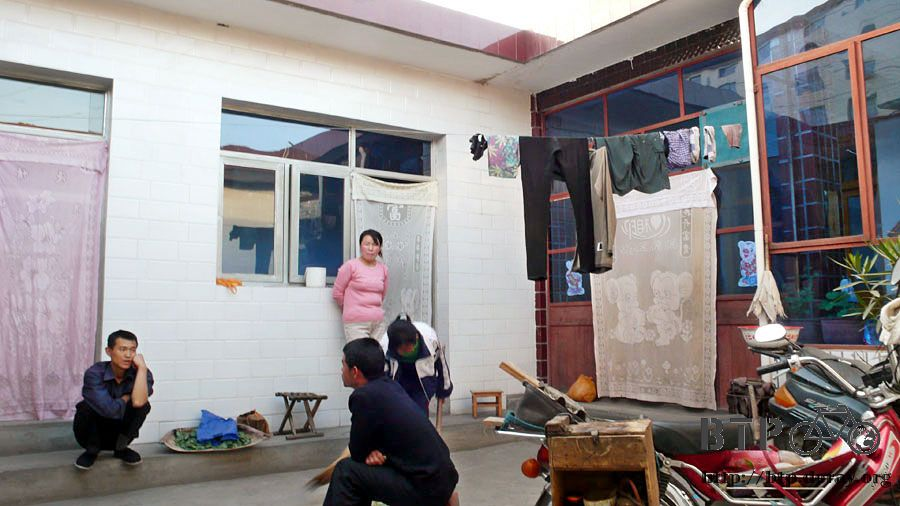
Resisting the urge, I asked the owner to see if it is safe to drink this water.
The owner replies that this is tap water and it is safe to drink.
If he told me that this water is from the well or natural spring, I would have gulp it without concern.
But if this is tap water… that’s another story…
Since I have already passed my beef noodle phase, I ordered slice noodle with boned pork chop.
I thought it will be served on a single dish, however the sliced noodle and the boned pork comes in separate dishes.
The pork is chopped in small piece and stewed, it is not oily and the meat separate from the bone easily.
Sprinkled with the freshly sliced shallots, the sweet and slightly spicy taste goes very well with the delicious pork chops.
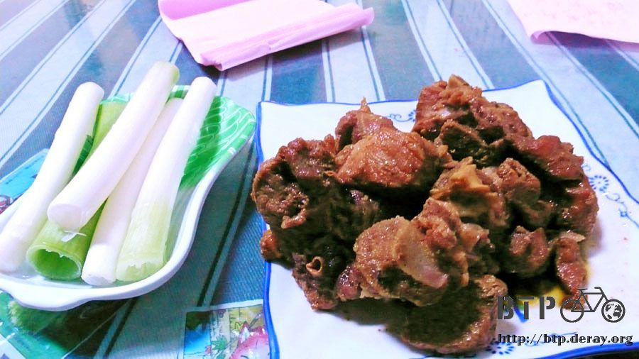
This restaurant seems quite famous in the neighborhood and the place is full of guests.
Most table ordered several pounds of pork chop.
Since I am all by myself, I only ordered half a pound of the pork chop to fill my desire of food.
Compared to the excellent pork, the sliced noodle does not stand out at all.
It was like a normal sliced noodle inside something tastes like sour and spicy soup.
With my stomach full of food, I walked back to the hotel and saw the hotel owner was playing some kind of card game with the guests.
I thought that they must be playing something that I have never heard of, but their conversation caught my attention.
“Shit! I don’t even have a two.”
“Single three, I will deal single five.”
They are playing the Big Two! I know how to play this!
(Note from the translator: Big Two is a very popular card game in SE Asia.
The rule is a little bit similar to President, but instead of Ace, Two ranked highest in game.)
When I was about to enter the game, I found out that the rule they followed is not that familiar to me…
“Why can’t I use a single card instead of a pair with three of a kind to form a full house?
The rule is not at all flexible.”
“Three to eight!” Hum, sound likes he had a hand of straight.
Hold on!
Three to eight???
Why is it three to eight? This means 3, 4, 5, 6, 7, 8. Six card in one hand?
Do not laugh at this yet. This “three to eight” skips six in the straight!
But the guy still deals the hand without any hesitation, and no one complains.
It was like they are following their rule perfectly.
I was tempted to go out my room and join the game,
but listening to their conversation during the game and trying not to laughing out loud made my stomach hurt.
They are even betting in this totally chaotic game. Loser pays 50 cents to winner each game.
I originally thought that I should be able to earn some money for ice bar with my experience in “Big Two”,
but with this chaotic rule, I may end up losing my pants.